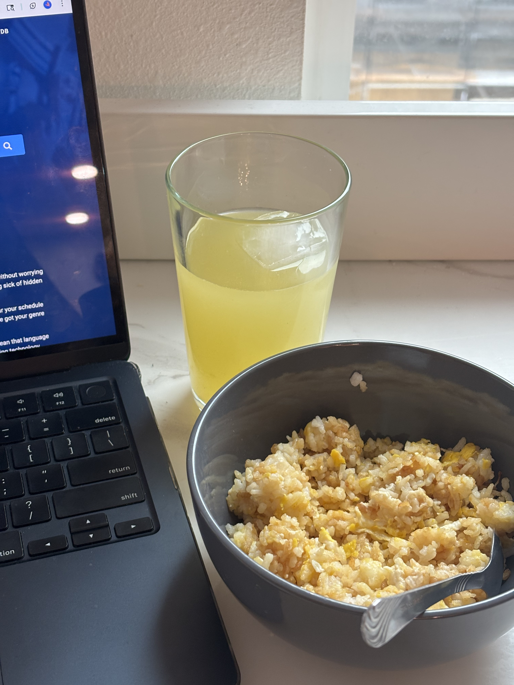

Here's a recipe for an easy meal when you're balancing your academic, professional, and social lives! Inspired by Chinese cuisine and South East Asian cultures.
Ingredients:
- Jasmine rice
- 2 eggs
- Soy sauce
- Butter
- Chili oil (optional)
Steps:
- Place your pan on the stove and coat it with a thin layer of butter.
- Place cooked rice onto the pan, and stir for a few minutes, ensuring it doesn't burn.
- Drizzle soy sauce on the rice. Crack open two eggs onto the rice in the pan.
- Stir in the pan until eggs are cooked and rice is coated with eggs and soy sauce. Add more butter if the rice begins sticking to the pan.
- Place in a bowl and top off with chili oil if preferred.